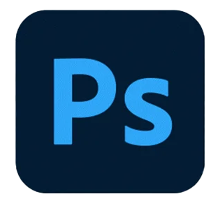
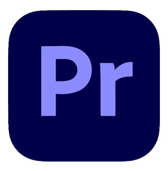
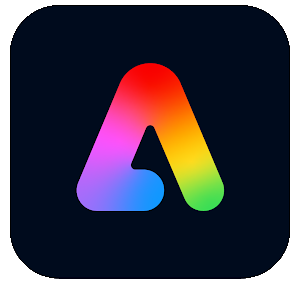
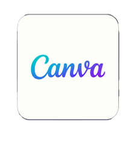

Greetings everyone! My name is Evan Aleman and I am mostly known for being a highly skilled and imaginative Graphic Designer from the area of Orlando, Florida.
I have a passion in the area of Graphic Design with the motivation of creating video games, which was formed from my enjoyment in playing with them as one of
my favorite activites. I am currently studying at Seminole State College with plans to transfer to the University of Central Florida and am currently learning
new things about Digital Media everyday with the projects that I often recieve and the many observations that I make in the mindset of a Designer. As a
Graphic Designer, I have been known to possess an impressive talent for translating concepts into visually fascinating designs using my past experience
and observations to observe details of any size and understand my clients' needs. Using this talent, my expertise in technology, and my creativity, I
help bring ideas to life and construct designs that help to leave audiences a significant meaning, leaving a positive impact on the product. With my
competence in industry-standard design software and diverse understanding in current design trends, I consistenly produce innovative and compelling
visuals that leaves products with an outstanding impression and a meaningful significance behind the IP. Other than Graphic Design and playing video
games, I also enjoy hanging around with friends and living life with the enjoyment to observe my surroundings for fun.
   
All designs in portfolio were made using Adobe Illustrator and Adobe Photoshop